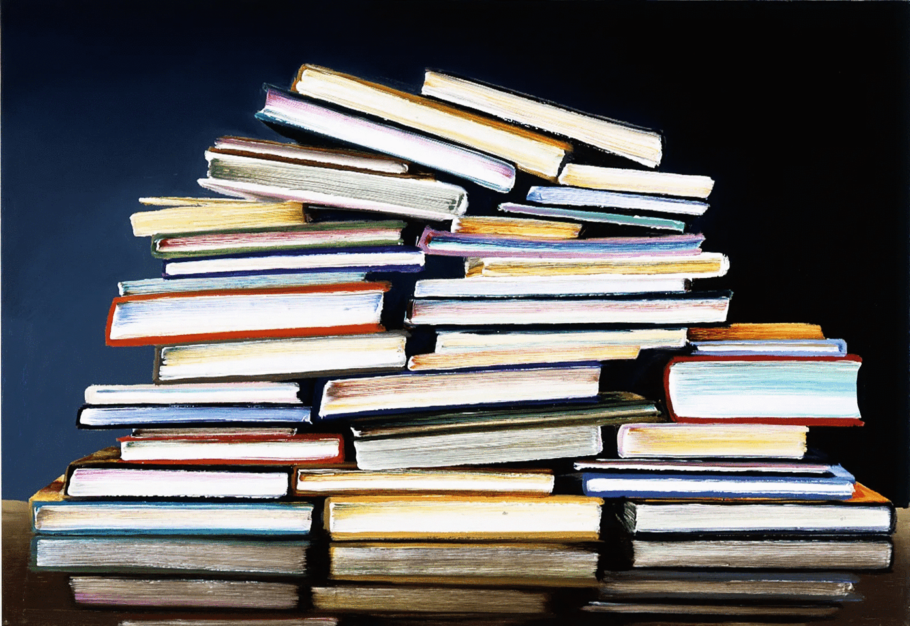
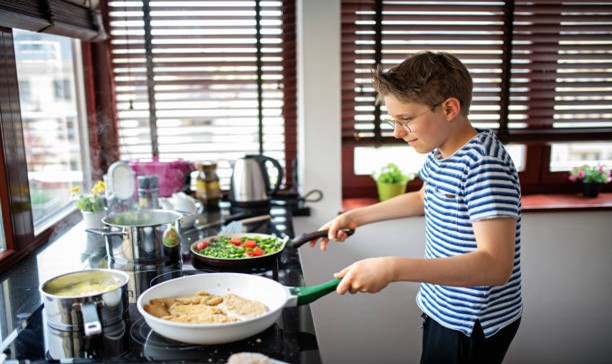
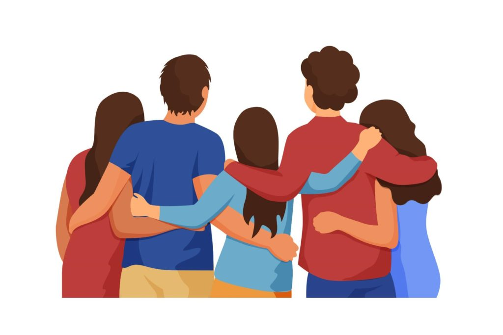
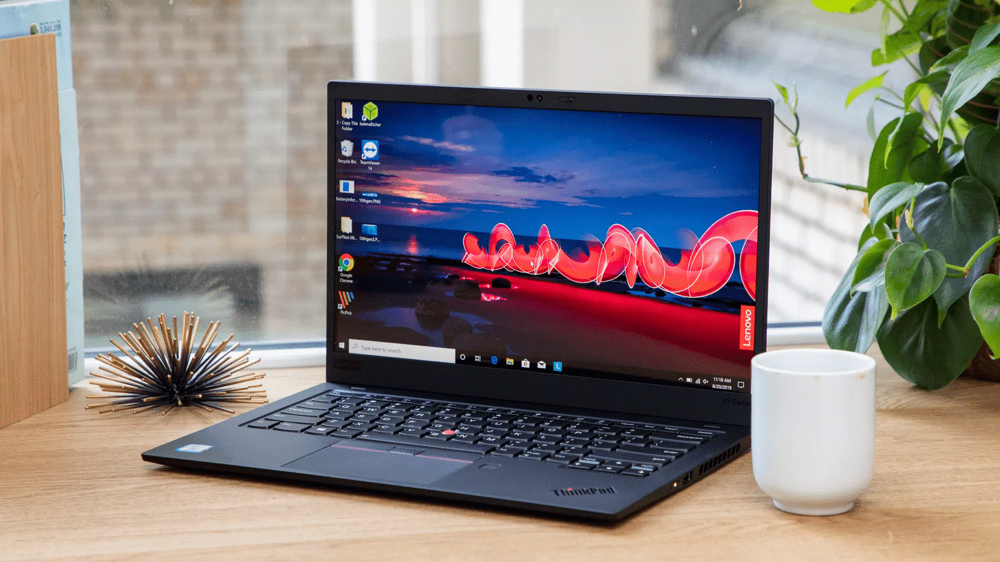
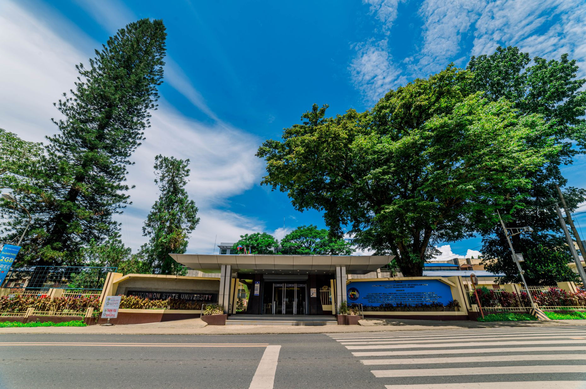

Flexing Myself

For me my biggest flex is when I graduated my senior year and having an honors in class, I am so proud of myself that despite all of the challenges and struggles that I have experienced in school and also in my personal life I was able to surpass all of it because of my dedication and hardwork.
- 
Because I love books, I have read so many of it and it is on of the things that I am really proud of.
- 
At young age, I really like cooking, it was my biggest flex that I have learned to cook some dishes like adobo, sinigang, menudo etc.
- 
My friends are one of the things that I am really proud of, I may have a few friends but all of them are a true friend.
- 
For me it is big achievement to own a laptop by saving with your own money and it is one of my biggest flex.
- 
Being able to enter to college is a privilege because not everyone can be able to continue their studies because of some circumstances, and it is one of my biggest flex or achievement to enter BukSu and pursue my studies.